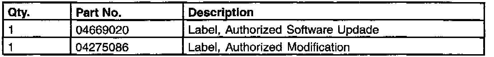
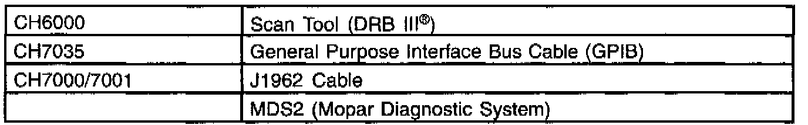
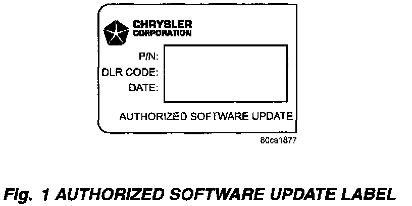
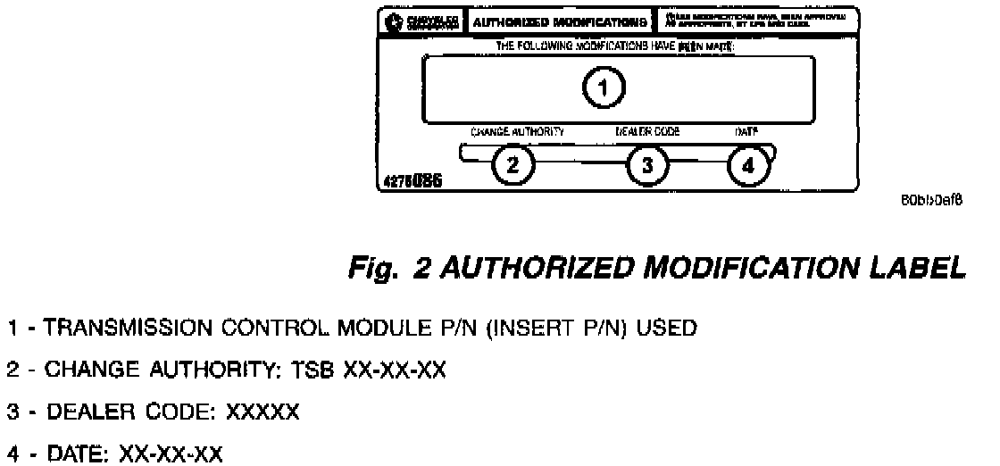
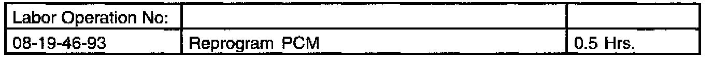

PCM - MIL ON/Erroneous DTC P1398 (or $BA)
NUMBER: 25-003-01GROUP: Emissions
DATE: Feb. 23, 2001
SUBJECT:
Erroneous DTC P1398 (or $BA) - No Crank Sensor Learn
OVERVIEW:
This bulletin involves selectively erasing and reprogramming the Powertrain Control Module (PCM) with new software (calibration level 96Cal18 or 97Cal18).
MODELS:
1996 - 1997 (AB) Ram Van
1996 - 1997 (AN) Dakota
1996 - 1997 (BR/BE) Ram Truck
1997 (TJ) Wrangler
1996 - 1997 (XJ) Cherokee
1996 - 1997 (ZJ) Grand Cherokee
NOTE:
THIS BULLETIN APPLIES TO VEHICLES EQUIPPED WITH A GASOLINE ENGINE.
SYMPTOM/CONDITION:
A customer may experience a MIL (Check Engine Lamp) illumination due to an erroneous DTC P1398 - No Crank Sensor Learn. This DTC may also be
displayed as a $BA - Adaptive Numerator at Limit. This condition may be
caused by a momentary drop in the supply voltage to the powertrain control module.
This condition may occur when a normal, or higher, electrical load is applied to the battery. A momentary drop in the supply voltage to the PCM may be caused by a marginal battery or poor electrical connections from the battery to the PCM. The condition may be further aggravated by cold ambient temperatures or when the vehicle has been left unused for an extended period of time.
DIAGNOSIS:
1. Verify the calibration level of the PCM software. If the PCM software is at 96Cal18 or 97Cal18, or higher, then this TSB does not apply. Further diagnosis is required.
2. If PCM software is earlier (lower or less) than either 96Cal18 or 97Cal18, then perform the Repair Procedure.

PARTS REQUIRED:

EQUIPMENT REQUIRED:
NOTE:
THE MDS2 MUST BE OPERATING AT CIS CD 2077 OR HIGHER.
REPAIR PROCEDURE:
1. Reprogram the PCM using the MDS2 (Mopar Diagnostic System) and the DRBIII(R) (Scan Tool).
NOTE:
DUE TO THE PCM REPROGRAMMING PROCEDURE, A DTC MAY BE SET IN OTHER MODULES (BCM, MIC, SKIM, ETC.) WITHIN THE VEHICLE, IF SO EQUIPPED. SOME DTC'S MAY CAUSE THE MIL TO ILLUMINATE. ALL DTC'S RELATE TO A LOSS OF COMMUNICATIONS BETWEEN MODULES. CHECK ALL MODULES, RECORD THE FAULTS, AND ERASE THESE FAULTS PRIOR TO RETURNING THE VEHICLE TO THE CUSTOMER. ERASE ANY FAULTS IN THE PCM LAST, AFTER ALL OTHER MODULES HAVE HAD THEIR FAULTS ERASE.
NOTE:
THE FOLLOWING STEPS ARE REQUIRED BY LAW.

2. Type the necessary information on the "Authorized Software Update Label" p/n 04669020 (Fig. 1). Attach the label to the Powertrain Control Module and cover the label with the clear plastic overlay.

3. Type the necessary information on the "Authorized Modification Label" p/n 04275086 and attach the label near the VECI label (Fig. 2).
POLICY:
Reimbursable within the provisions of the warranty.

TIME ALLOWANCE:
FAILURE CODE: